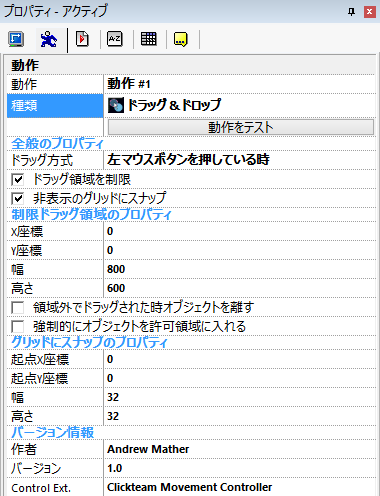

この動作は、マウスのドラッグ＆ドロップ操作を再現します。 ドラッグ可能なオブジェクトは (マウスコントロールと同様) 、一部のエリアに限定可能です。 オブジェクトの動きは微調整できます。 マウスコントロールを完全に無効にして、イベントエディタからドラッグの開始/停止が可能です。
制限のないシンプルなドラッグ＆ドロップ動作ですので、オブジェクトはマウスの左ボタンを押してドラッグし、特別な設定は不要です。
使用するボタンやドラッグの開始方法を変更したり、領域を制限したい場合は、対応するプロパティを変更します。 ドラッグはユーザーがオブジェクトをクリックすると常に開始され、オブジェクトで、ファイン判定を使う オプションが有効の場合 (既定では有効)は、ユーザーはオブジェクトの非透過部分をクリックしなければなりません。
ユーザーがマウスのボタンを入れ替えている場合 (例: 左利き用)、ドラッグの開始に使用するボタンも入れ替わります。 これは一貫性と使いやすさが理由です。 物理的な左右よりも、 "左" ボタンはプライマリーかつ選択を行う主ボタンであり、 "右" ボタンはセカンダリーかつメニューを表示する副ボタンであるということを優先しています。
オブジェクトをドラッグしている間は、 "歩く" のアニメーションが表示されます。 静止している場合は "停止" のアニメーションが表示されます。

図 1: ドラッグ＆ドロップ動作のプロパティ。
全般のプロパティ
ドラッグ方式: ユーザーがオブジェクトをドラッグする方式を選択します。 次の方式が利用できます:
ドラッグ領域を制限: オブジェクトをドラッグできる領域を制限します。 このオプションを有効にすると、 制限ドラッグ領域のプロパティ の項目群が表示されます。
非表示のグリッドにスナップ: このオプションが有効の場合、ドラッグ中のオブジェクトは指定したグリッドの各点にスナップします。 このオプションを有効にすると、 グリッドにスナップのプロパティ の項目群が表示されます。
制限ドラッグ領域のプロパティ
ここで設定した領域外にオブジェクトをドラッグすることはできません。
X座標: ドラッグ領域の X 座標です。
Y座標: ドラッグ領域の Y 座標です。
幅: ドラッグ領域の幅です。
高さ: ドラッグ領域の高さです。
領域外でドラッグされた時オブジェクトを離す: このオプションが有効の場合、指定した領域外にオブジェクトをドラッグしようとすると、そこで自動的にオブジェクトをドロップします。 このオプションが無効の場合、オブジェクトはユーザーがドロップするまで (または動作が停止するまで) ドロップされません
強制的にオブジェクトを許可領域に入れる: 既定では、制限領域はオブジェクトのドラッグ中のみ有効ですが、 このオプションが有効の場合、オブジェクトは常に領域内に止まります。 例えば、位置を変更のアクションでも、領域の外にオブジェクトを移動することはできません。
グリッドにスナップのプロパティ
起点X座標: グリッドの X 座標の開始地点です。 注意: グリッドはこの地点の左に無限に広がります。 この地点を超えてオブジェクトをドラッグしたくない場合は、制限ドラッグ領域のプロパティを使用します。
起点Y座標: グリッドの Y 座標の開始地点です。 注意: グリッドはこの地点の上に無限に広がります。 この地点を超えてオブジェクトをドラッグしたくない場合は、制限ドラッグ領域のプロパティを使用します。
幅: グリッドの幅です。
高さ: グリッドの高さです。